Lab 4, Chapter 6 - Simulation. (Due on 09:00 PM, Feb 27, 2015)
Random number generator is based on the simulation theory. Simulation is to accosiate two distributions, specifically speaking, associate the probability of two events defined on two random variables X and Y. X, Y can be either discrete, or continuouse.
Contents
Generate random numbers for random variable
A. Generate 10000 numbers directly from binornd() function
numOfPoints = 10^5; n = 3; p = 0.5; xs = binornd(n, 0.5, [1, numOfPoints]); max(xs); min(xs);
Now let's draw the empirical distribution of the random numbers. Let's count the number of random numbers we get for values {0, 1, 2, 3}, respectively.
valueCounts = hist(xs, 0:1:3); valueRatios = valueCounts / numOfPoints; plot(0:1:3, valueRatios,'r.', 'MarkerSize', 40); title('Empirical Distribution'); xlabel('X'); ylabel('Ratio');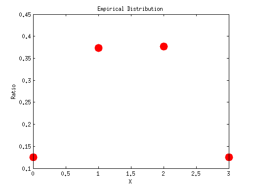
B. Generate 10000 binormial numbers by simulation using 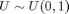 distribution. According to the table of Homework Q1.
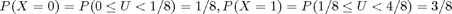,
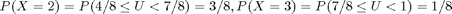. So the code would be,
1) if we get a random number u within [0, 1/8), we assume we get the a 0 for X,
2) else if we get a random number u within [1/8, 4/8), we assume we get a 1 for X,
3) else if we get a random number u within [4/8, 7/8), we assume we get a 2 for X,
4) else if we get a random number u within [7/8,1) we assume we get a 3 for X.
xs_simulated = []; us = unifrnd(0,1, [1,numOfPoints]); for i = 1:numOfPoints u = us(i); if( u >= 0 && u < 1/8) x = 0; elseif( u >= 1/8 && u < 4/8 ) x = 1; elseif( u >= 4/8 && u < 7/8 ) x = 2; elseif( u>= 7/8 && u < 1 ) x = 3; end xs_simulated(i) = x; end
Plot the empirical distribution for xs_simulated
valueCounts = hist(xs_simulated, 0:3); valueRatios = valueCounts / numOfPoints; plot(0:3, valueRatios,'r.', 'MarkerSize', 40); title('Empirical Distribution simulated from $U(0,1)'); xlabel('X'); ylabel('Ratio');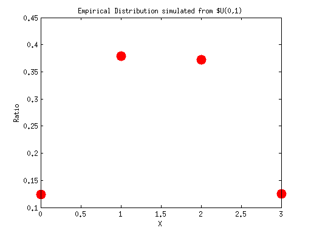
Generate random numbers for random variable
A. Generate 10000 numbers directly from exprnd() function
numOfPoints = 10^5;
lambda = 2;
xs = exprnd(1/lambda, [1, numOfPoints]); % Pay attention exprnd() takes a parameter mu, which is 1/lambda.
max(xs);
min(xs);
Now we can draw the empirical distribution for xs. Since xs can be [0, infinity), we will set the stepsize a little smaller, but not too small.
valueCounts = hist(xs, 0:0.1:26); valueRatios = valueCounts / numOfPoints; plot(0:0.1:26, valueRatios,'r-','LineWidth', 2); title('Empirical Distribution'); xlabel('X'); ylabel('Ratio'); % *B. Generate 10000 numbers by simulation using $U\sim U(0,1)$ distribution.*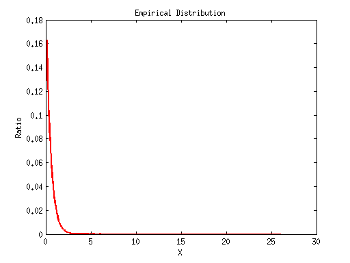
According to the formula in Homework 5 Q3. The simulation rule is:
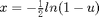. So the pseducode shall be:
For any random number u we get, let 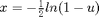.
xs_simulated = []; us = unifrnd(0,1, [1,numOfPoints]); for i = 1:numOfPoints u = us(i); x = -1/2 * log(1 - u); xs_simulated(i) = x; end valueCounts = hist(xs_simulated, 0:0.1:26); valueRatios = valueCounts / numOfPoints; plot(0:0.1:26, valueRatios,'r-','LineWidth', 2); title('Empirical Distribution simulated from $U(0,1)$'); xlabel('X'); ylabel('Ratio');

Assignments
Question1 . Generate 100000 random numbers for 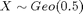 distribution.
a). Generate using Matlab built-in function geornd().
b). Generate by simulation using distribution.
c). Draw the empirical distribution for the numbers generated from a) or b). Do they look similar?
Extra Credits(5 points) . Generate 100000 random numbers for 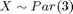 distribution.
a). Generate using Matlab built-in function gprnd() . (Hint: To get Par(3), with 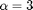. You need to set the 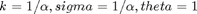.)
b). Generate by simulation using distribution.
c). Draw the empirical distribution for the numbers generated from a) or b). Do they look similar?
Submission: Put all of your code, figures, writeups in a single document with .doc or .docx or .pdf format. Submit the document through blackboard. Attention, .txt format is not acceptable.